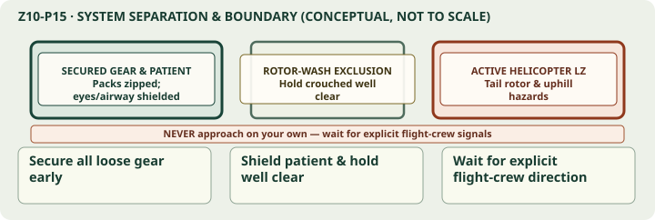

Z10-P15 · Wilderness medicine · New manuscript
Coordinate air-ambulance medical rescue under strict crew exclusion rules
Keep patients, bystanders, and loose gear completely clear of rotor-wash hazards while flight crews control every air-rescue step.
When it applies · Remote medical emergencies where dispatch notifies the party that a rescue helicopter is inbound.
Equipment · Secure packs/tarps, eye protection if carried, high-contrast clothing kept weighed down, and active comms with dispatch.

Actions
- Clear or weigh down all loose tarps, sleeping pads, hats, and plastic bags well before the aircraft approaches—rotor wash hurls loose gear into tail rotors and faces at high speed.[N13, T01]
- Shield the patient's eyes and airway from blowing dust, gravel, or snow, stay seated/crouched well clear of the landing area, and keep all bystanders completely back until the flight crew explicitly signals you.[N13, T01]
- Never approach a helicopter from behind (tail rotor), uphill side, or on your own initiative; follow explicit hand signals or radio instructions from the crew or dispatch exclusively.[N13]
Failure recognition · Running excitedly toward a landing rescue helicopter with an unsecured tarp fluttering beside the patient.[N13, T01]
Verify · Confirm all loose equipment is secured inside closed packs, bystanders are accounted for well clear, and one person relays dispatch prompts.[N13, ED]
Stop or change course · Any unsecured debris, shifting bystanders, or unclear crew signal requires holding completely still in place until crew personnel walk to you.[N13]
Evidence and editorial notes
- N13 · NPS · Visitor Protection Aviation Program (Current web edition)
- Section: Visitor protection > Search and rescue · Conditions: People waiting for organized air rescue
Support: Remain clear and follow explicit directions from the flight crew or dispatch.
Limitations: Conservative editorial boundary. Agency program page does not supply a layman landing-zone or approach procedure. · Conflicting evidence: See A01 cross-zone review.
Editorial note: Use only within the stated conditions. · Specialist reviewer: SAR aviation
Primary source · checked 2026-11-24 - T01 · American Red Cross · First Aid Steps (current web edition)
- Section: First Aid Steps > Check the scene; check the person · Conditions: Lay responder in United States; assess safety before contact
Support: Check scene safety, responsiveness, breathing and immediately life-threatening conditions.
Limitations: Lay guidance does not replace advanced clinical or rescue protocols. · Conflicting evidence: None; universal first-response opening gate.
Editorial note: Anchors scene-safety-first rule across Z01. · Specialist reviewer: EMS and wilderness medicine
Primary source · checked 2026-11-24
Source lineage · NPS Visitor Protection Aviation Program; new manuscript · Classification · New manuscript.